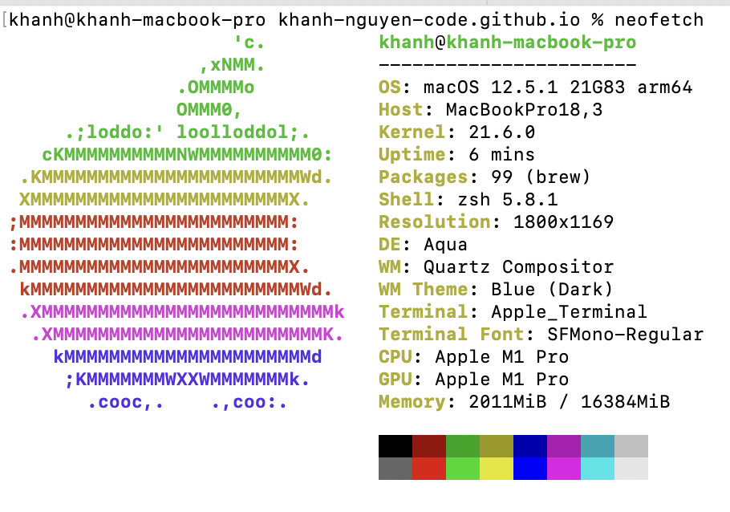
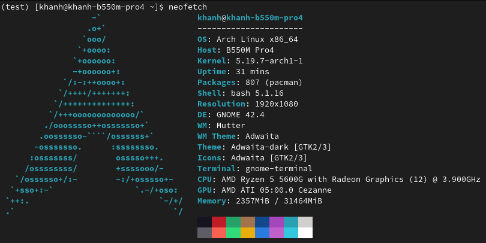

How I install applications in M1 macbook

Package Manager
homebrew - https://brew.sh/ miniconda - https://docs.conda.io/en/latest/miniconda.htmlCLI Application
Preferably install from brew or conda, if the port is unavailable, request the authors.Otherwise, download binaries or build from source and put into ~/Projects directory and link the binaries to ~/.zshrc.
GUI Application
Preferably download .app file (similar to AppImage for Linux).I use arch, btw
